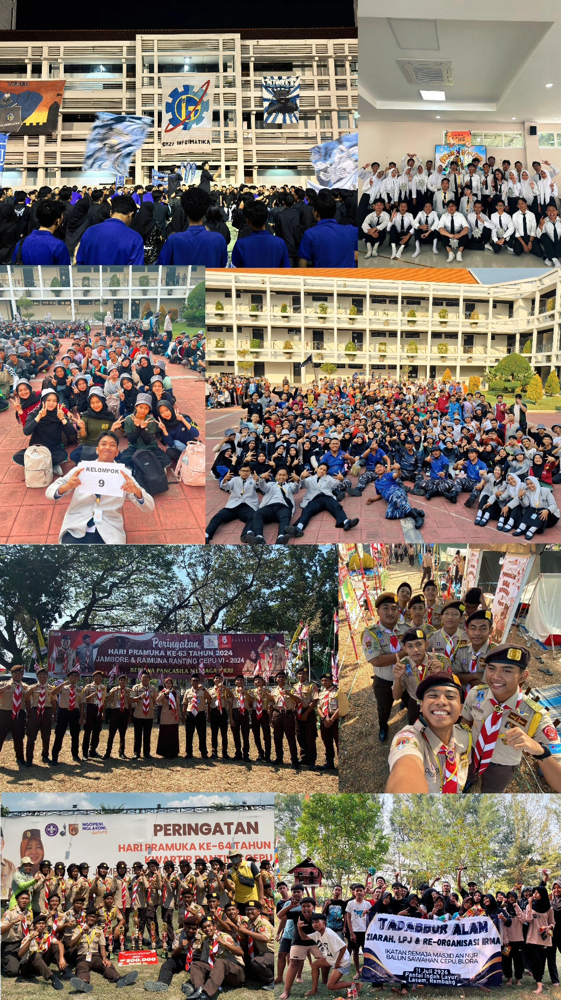
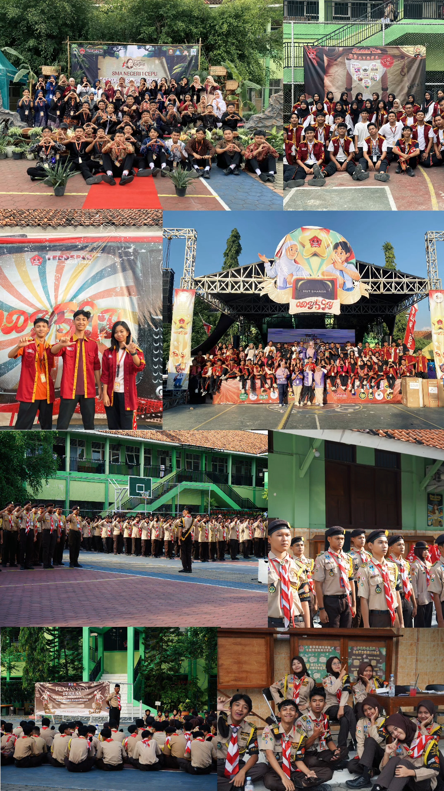

Kegiatan, Organisasi, & Kepanitiaan


OSIS
Aku mengikuti organisasi ini saat kelas 11 dan tergabung ke sekbid 7 yaitu kesehatan jasmani dan rohani. Memiiki berbagai pengalaman dari kepanitiaan dan kegiatan-kegiatan selama 1 periode tersebut.
Pramuka
Tergabung ke dalam kepengurusan Dewan Ambalan SMAN 1 Cepu, 2 kali mengikuti lomba Raimuna Ranting, dan menjadi sangga kerja Pesta Siaga pada tahun 2025.
Pengalaman Lainnya
Mengikuti berbagai kegiatan kampus PENS diantaranya PKKMB, LMT, kegiatan-kegiatan HIMIT (HIMA), dan saat ini tergabung dalam UKM Software Development dan organisasi remaja masjid (luar kampus).